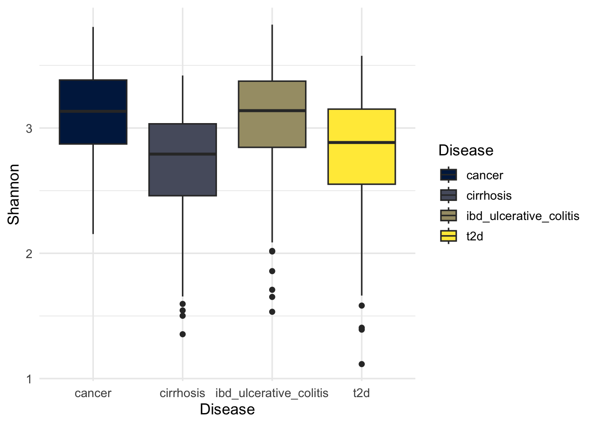
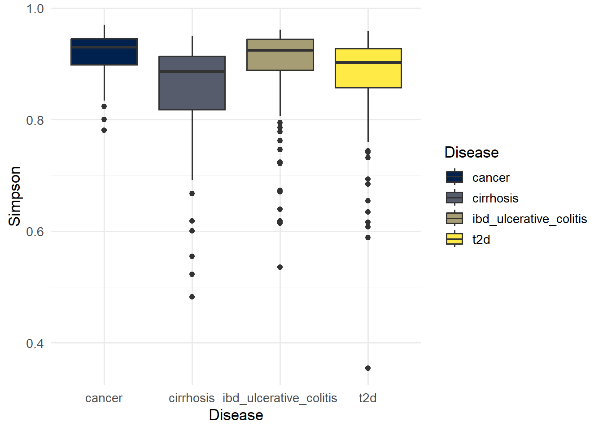
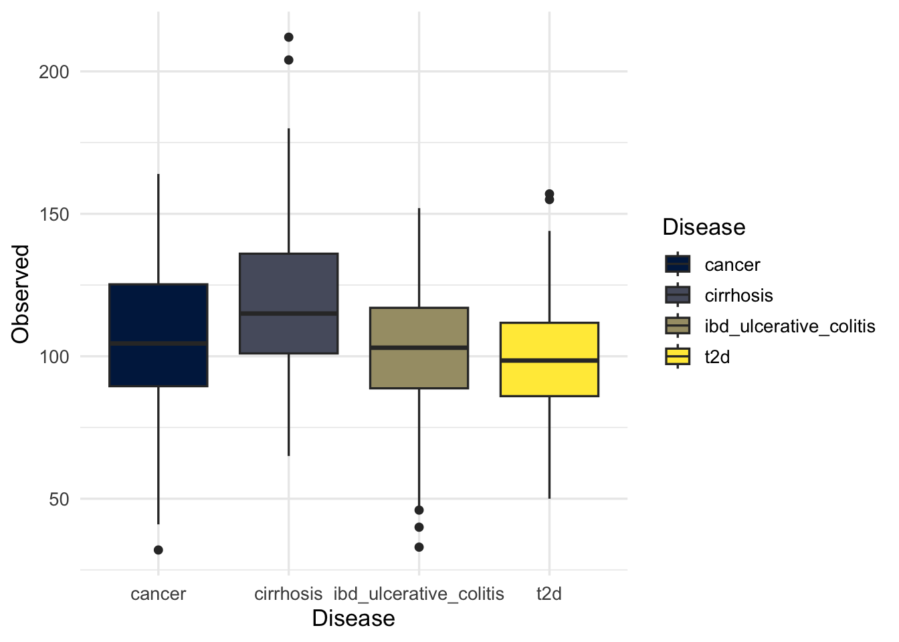

Show code
# if need, use this to rarefying data
# rarecurve(t(otu_table(metagenomics)))Alpha diversity is a term used to describe the “within-sample” diversity. It measures how complex a single microbial community is. Alpha diversity combines two main ecological properties, richness (how many species are present) and evenness (how evenly distributed are the species).
We use four indexes (metrics) to calculate alpha diversity:
A popular way to measure the diversity of species in a community. It takes into account both species richness and species evenness, but with weight on the richness.
The idea behind this metric is that the more species you observe, and the more even their abundances are, the higher the uncertainty of predicting which species you would see next if you were to look at another observation from this sample.
Higher values of Shannon Diversity indicate more diverse and more evenly distributed community. Lower values indicates the community is dominated by a few taxa.
The Simpson Index is another common measure of diversity. It measures the probability that two individuals taken from the sample at random will belong to different species.
Simpson takes into account the number of different types of species in a sample and their relative abundance. As species richness and evenness increase, diversity increases. It is less sensitive to richness than the Shannon index, and more sensitive to evenness. Adding rare species doesn’t change Simpson’s values as much as Shannon values and therefore the Simpson Index emphasizes dominant species.
Simpson values ranges from 0 to 1, with values close to 1 indicating higher diversity and values near 0 indicating lower diversity (dominance).
The Inverse Simpson index is a variation of the Simpson index. This metric is sometimes preferred to other measures of alpha diversity because it is an indication of the richness in a community with uniform evenness that would have the same level of diversity.
Inverse Simpson Values can range from 1 (only one taxon) to S (all taxa equally abundant).
This index provides an intuitive microbiol interpretation of diversity in terms of equivalent species numbers.
Counts the actual number of unique features (OTUs) present.
In microbial ecology and amplicon sequencing (e.g., 16S rRNA gene sequencing) where samples often have vastly different numbers of reads. Rarefying aims to make all samples have the same total number of reads by randomly drawing a subset of reads from each sample without replacement. This helps reduce biases introduced by unequal sequencing effort, particularly for richness-based alpha diversity metrics such as Observed richness, which are highly sensitive to sampling depth. Rarefaction curves are also commonly used to evaluate whether sequencing depth is sufficient to capture the majority of microbial diversity within samples.
In this study, raw sequencing count data were not available, and the dataset consisted only of relative abundance values. Because rarefaction requires integer read counts and knowledge of original library sizes, rarefaction-based normalization and sequencing-depth analyses could not be performed. Alpha diversity metrics were therefore calculated directly from relative abundance data using proportion-based formulas.
# if need, use this to rarefying data
# rarecurve(t(otu_table(metagenomics)))We use four indexes (metrics) to calculate alpha diversity (Shannon, Simpson, Inverse Simpson, Observed).
The phyloseq package in R already has built in functions to calculate these metrics for data, but for data with raw counts required (whole numbers ≥0).
alpha_div <- estimate_richness(metagenomics, measures = c("Shannon", "Simpson", "InvSimpson", "Observed"))
Because our data only contains only relative abundance, we will create functions to calculate these metrics manually using using the formulas:
\(R\) = the number of different taxa observed in a sample
\(p_i\) = proportion of observations belonging to the \(i\)th species
\[ R = \sum I(p_i > 0) \]
where \(1_{p_i >0}\) is an indicator:
= 1 if taxon i is present
= 0 if absent
\[ H' = -\sum_{i=1}^{R} p_i \log(p_i) \]
\[ D = 1 - \lambda \]
\(\lambda\) = \(\sum_{i=1}^{R} p_i^2\) (the probability that two individuals taken from the sample at random represent the same species). Therefore, \(1-\lambda\) is the probability that two individuls taken from the sample at random represent different species.
\[ \frac{1}{\lambda} = \frac{1}{\sum_{i=1}^{R} p_i^2} \] \(\lambda\) = \(\sum_{i=1}^{R} p_i^2\) (the probability that two individuals taken from the sample at random represent the same species). Therefore, \(1-\lambda\) is the probability that two individuls taken from the sample at random represent different species.
alpha_df <- compute_alpha_from_rel(metagenomics)
head(alpha_df) Sample_ID Shannon Simpson InvSimpson Observed
Sample_1880 Sample_1880 2.574351 0.8228451 5.644776 114
Sample_1881 Sample_1881 3.508077 0.9522032 20.921897 114
Sample_1882 Sample_1882 3.120972 0.9257693 13.471508 113
Sample_1883 Sample_1883 2.995985 0.8889156 9.002166 100
Sample_1884 Sample_1884 2.447959 0.8359287 6.094911 92
Sample_1885 Sample_1885 2.164102 0.7215517 3.591331 94
Disease Gender Country
Sample_1880 ibd_ulcerative_colitis female spain
Sample_1881 ibd_ulcerative_colitis male spain
Sample_1882 ibd_ulcerative_colitis female spain
Sample_1883 ibd_ulcerative_colitis male spain
Sample_1884 ibd_ulcerative_colitis male spain
Sample_1885 ibd_ulcerative_colitis male spainwrite.csv(alpha_df, here("figures", "Alpha", "alpha_df.csv"),
row.names = FALSE)p_shannon <- ggplot(alpha_df, aes(x = Disease, y = Shannon, fill = Disease)) +
geom_boxplot()
p_shannon
ggsave(here("figures", "Alpha", "alpha_shannon.pdf"), p_shannon)Saving 7 x 5 in imageIn general, Shannon values of 3.50 and above for the Shannon index indicates high diversity while values below 2.0 indicate low diversity (Baliton et al., 2020).
p_simpson <- ggplot(alpha_df, aes(x = Disease, y = Simpson, fill = Disease)) +
geom_boxplot()
p_simpson
ggsave(here("figures", "Alpha", "alpha_simpson.pdf"), p_simpson)Saving 7 x 5 in imageSimpson values close to 1 indicate higher diversity and values near 0 indicate lower diversity (dominance).
p_invsimpson <- ggplot(alpha_df, aes(x = Disease, y = InvSimpson, fill = Disease)) +
geom_boxplot()
p_invsimpson
ggsave(here("figures", "Alpha", "alpha_InvSimpson.pdf"), p_invsimpson)Saving 7 x 5 in imageInverse Simpson Values can range from 1 (only one taxon) to S (all taxa equally abundant).
p_observed <- ggplot(alpha_df, aes(x = Disease, y = Observed, fill = Disease))+
geom_boxplot()
p_observed
ggsave(here("figures", "Alpha", "alpha_observed.pdf"), p_observed)Saving 7 x 5 in imageNumber of unique tax (OTUs) present in each.
Shapiro–Wilk tests assess whether diversity metric values follows a normal distribution. In microbial data sets, these metrics are typically non-normal. Therefore, results are used as a diagnostic tool and provide understanding rather than a strict decision criterion.
metrics <- c("Shannon", "Simpson", "InvSimpson", "Observed")
shapiro_table <- normality_tests(alpha_df, metrics)
print(shapiro_table)# A tibble: 4 × 4
statistic p.value method Metric
<dbl> <dbl> <chr> <chr>
1 0.949 7.58e-12 Shapiro-Wilk normality test Shannon
2 0.758 4.82e-26 Shapiro-Wilk normality test Simpson
3 0.977 7.62e- 7 Shapiro-Wilk normality test InvSimpson
4 0.987 2.16e- 4 Shapiro-Wilk normality test Observed write.csv(shapiro_table, here("figures", "Alpha", "shapiro.csv"),
row.names = FALSE)If p-value > alpha 0.05, data is normal, use ANOVA. All test rejects the null hypothesis, so we use non-parametric test (Kruskal-Wallis).
kw_table <- kruskal_tests(
alpha_df,
metrics
)
print(kw_table)# A tibble: 4 × 5
statistic p.value parameter method Metric
<dbl> <dbl> <int> <chr> <chr>
1 65.4 4.21e-14 3 Kruskal-Wallis rank sum test Shannon
2 57.6 1.93e-12 3 Kruskal-Wallis rank sum test Simpson
3 57.6 1.93e-12 3 Kruskal-Wallis rank sum test InvSimpson
4 48.7 1.55e-10 3 Kruskal-Wallis rank sum test Observed write.csv(kw_table, here("figures", "Alpha", "kruskal-Wallis.csv"),
row.names = FALSE)The Kruskal–Wallis test evaluates whether median diversity differs across disease groups without assuming normality. A significant result indicates that at least one group differs, but does not specify which groups differ.
Since Kruskal-Wallis tells you there’s a difference somewhere among the groups, we may want to do post-hoc pairwise comparisons to see which groups differ. For non-parametric tests, we can use:
# Pairwise Wilcoxon test with p-value adjustment
PW_Wilcox_table <- pairwise_wilcox_tests(
alpha_df,
metrics
)
print(PW_Wilcox_table, n=25)# A tibble: 24 × 4
group1 group2 p.value Metric
<chr> <chr> <dbl> <chr>
1 cirrhosis cancer 9.05e- 8 Shannon
2 ibd_ulcerative_colitis cancer 6.89e- 1 Shannon
3 ibd_ulcerative_colitis cirrhosis 1.06e-10 Shannon
4 t2d cancer 2.62e- 5 Shannon
5 t2d cirrhosis 4.55e- 2 Shannon
6 t2d ibd_ulcerative_colitis 1.62e- 7 Shannon
7 cirrhosis cancer 1.28e- 6 Simpson
8 ibd_ulcerative_colitis cancer 8.05e- 1 Simpson
9 ibd_ulcerative_colitis cirrhosis 4.58e-10 Simpson
10 t2d cancer 3.74e- 4 Simpson
11 t2d cirrhosis 1.07e- 2 Simpson
12 t2d ibd_ulcerative_colitis 2.76e- 6 Simpson
13 cirrhosis cancer 1.28e- 6 InvSimpson
14 ibd_ulcerative_colitis cancer 8.05e- 1 InvSimpson
15 ibd_ulcerative_colitis cirrhosis 4.58e-10 InvSimpson
16 t2d cancer 3.74e- 4 InvSimpson
17 t2d cirrhosis 1.07e- 2 InvSimpson
18 t2d ibd_ulcerative_colitis 2.76e- 6 InvSimpson
19 cirrhosis cancer 1.90e- 2 Observed
20 ibd_ulcerative_colitis cancer 2.79e- 1 Observed
21 ibd_ulcerative_colitis cirrhosis 3.92e- 7 Observed
22 t2d cancer 7.42e- 2 Observed
23 t2d cirrhosis 7.87e-11 Observed
24 t2d ibd_ulcerative_colitis 1.58e- 1 Observed write.csv(PW_Wilcox_table, here("figures", "Alpha", "Pairwise_Wilcoxon.csv"),
row.names = FALSE)Wilcox test identifies specific group differences following a significant Kruskal–Wallis result. The Benjamini–Hochberg correction controls the false discovery rate due to multiple pairwise comparisons.
#To save all the data/graphs for the presentation
save(kw_table, PW_Wilcox_table, shapiro_table, alpha_df, p_shannon, p_simpson, p_invsimpson, p_observed, file = here::here("posts", "alpha_diversity.RData"))Alpha diversity analysis evaluates whether “within-sample” microbial community structure differs between disease groups in terms of richness and evenness. If significant differences are observed across metrics, this suggests that disease status is associated with broad ecological shifts in the microbiome, such as loss of diversity, increased dominance, or reduced richness.
Consistency across multiple indices strengthens biological inference, while divergence between metrics may indicate changes in community structure rather than simple loss or gain of taxa.
Alpha diversity was assessed using Shannon, Simpson, Inverse Simpson, and Observed richness indices computed from relative abundance data. Differences between disease groups were tested using Kruskal–Wallis tests followed by Wilcox post-hoc tests with Benjamini–Hochberg correction. Normality assumptions were evaluated using Shapiro–Wilk tests for exploratory purposes only.
print_session_info()R version 4.5.3 (2026-03-11 ucrt)
Platform: x86_64-w64-mingw32/x64
Running under: Windows 11 x64 (build 26200)
Matrix products: default
LAPACK version 3.12.1
locale:
[1] LC_COLLATE=French_France.utf8 LC_CTYPE=French_France.utf8
[3] LC_MONETARY=French_France.utf8 LC_NUMERIC=C
[5] LC_TIME=French_France.utf8
time zone: Europe/Paris
tzcode source: internal
attached base packages:
[1] stats graphics grDevices utils datasets methods base
other attached packages:
[1] gridExtra_2.3 pairwiseAdonis_0.4.1 cluster_2.1.8.2
[4] FSA_0.10.1 broom_1.0.12 lubridate_1.9.5
[7] forcats_1.0.1 stringr_1.6.0 purrr_1.2.1
[10] readr_2.2.0 tidyverse_2.0.0 knitr_1.51
[13] SpiecEasi_1.99.0 igraph_2.2.2 vegan_2.7-3
[16] permute_0.9-10 tibble_3.3.1 tidyr_1.3.2
[19] dplyr_1.2.0 viridis_0.6.5 viridisLite_0.4.3
[22] ggplot2_4.0.2 phyloseq_1.54.2 readxl_1.4.5
[25] here_1.0.2
loaded via a namespace (and not attached):
[1] rlang_1.1.7 magrittr_2.0.4 ade4_1.7-24
[4] otel_0.2.0 compiler_4.5.3 mgcv_1.9-4
[7] systemfonts_1.3.2 vctrs_0.7.2 reshape2_1.4.5
[10] pkgconfig_2.0.3 shape_1.4.6.1 crayon_1.5.3
[13] fastmap_1.2.0 backports_1.5.1 XVector_0.50.0
[16] ellipsis_0.3.2 labeling_0.4.3 utf8_1.2.6
[19] rmarkdown_2.31 sessioninfo_1.2.3 tzdb_0.5.0
[22] ragg_1.5.2 xfun_0.57 glmnet_4.1-10
[25] cachem_1.1.0 jsonlite_2.0.0 biomformat_1.38.3
[28] huge_1.5.1 VGAM_1.1-14 parallel_4.5.3
[31] R6_2.6.1 stringi_1.8.7 RColorBrewer_1.1-3
[34] pkgload_1.5.1 cellranger_1.1.0 Rcpp_1.1.1
[37] Seqinfo_1.0.0 iterators_1.0.14 usethis_3.2.1
[40] IRanges_2.44.0 Matrix_1.7-4 splines_4.5.3
[43] timechange_0.4.0 tidyselect_1.2.1 rstudioapi_0.18.0
[46] yaml_2.3.12 codetools_0.2-20 pkgbuild_1.4.8
[49] lattice_0.22-9 plyr_1.8.9 Biobase_2.70.0
[52] withr_3.0.2 S7_0.2.1 evaluate_1.0.5
[55] survival_3.8-6 Biostrings_2.78.0 pillar_1.11.1
[58] foreach_1.5.2 stats4_4.5.3 generics_0.1.4
[61] rprojroot_2.1.1 S4Vectors_0.48.0 hms_1.1.4
[64] scales_1.4.0 glue_1.8.0 pulsar_0.3.13
[67] tools_4.5.3 data.table_1.18.2.1 fs_2.0.1
[70] grid_4.5.3 ape_5.8-1 devtools_2.5.0
[73] nlme_3.1-168 cli_3.6.5 textshaping_1.0.5
[76] gtable_0.3.6 digest_0.6.39 BiocGenerics_0.56.0
[79] htmlwidgets_1.6.4 farver_2.1.2 memoise_2.0.1
[82] htmltools_0.5.9 multtest_2.66.0 lifecycle_1.0.5
[85] MASS_7.3-65